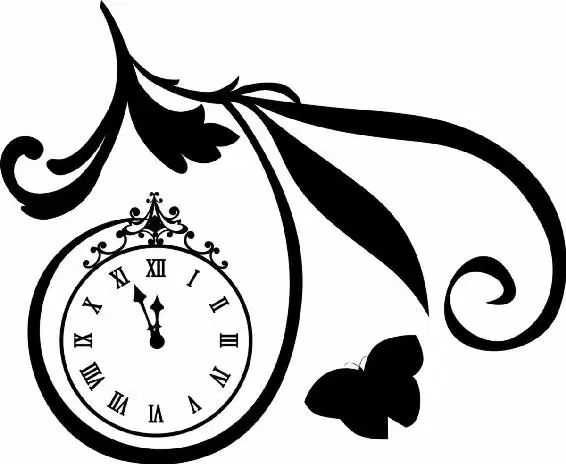

Meanwhile, unaware that anyone was looking for them, Kit and Ella walked down the long castle gallery. The walls were lined with portraits of previous rulers and their families, their faces looking down upon the pair.
Ella’s mind was reeling. As they had finished the most perfect dance, she was unable to miss the way the crowd had bowed low as they had passed. It had seemed odd to her, until she realized that as they bowed, they also said, “Your Highness.” She had looked at Kit in bewilderment . It was then that he had leaned down and asked her to join him in the gallery.
Now Ella was trying to make sense of it all. She had thought she was dancing with just a boy… an apprentice of some sort. But this was obviously no regular boy. Had he been playing her for a fool all along? He had seemed real and honest. Now she didn’t know. The promise she had made to her mother echoed through her head. Have courage. She took a deep breath. She would find out the truth.
“So you are the prince,” Ella said.
“Well, not the prince exactly. There are plenty of princes in the world. I’m only a prince,” Kit said, trying to lighten the moment.
“I see,” she replied. “But you are no apprentice.”
“I am,” Kit said quickly. “An apprentice monarch. Still learning the trade.” When Ella didn’t say anything, Kit scrambled to find the words. “Please forgive me. I thought you might treat me differently if you knew. I mistook you for a simple country girl. But now I see that you didn’t want to overawe a plain soldier.”
Ella looked down, thinking it through. This was Kit, even if he was really a prince.
“So,” Kit said, holding out his hand, “no more surprises?”
Ella paused and then took his hand. “No more surprises,” she repeated.
A relieved smile spread across Kit’s face, and Ella found herself once again captivated by his handsome features. Nervously, Ella looked away, her gaze landing on the portrait in front of them. It was a sizable painting of Kit riding a majestic horse. He was larger than life, his hand holding a sword high in the air, his eyes trained on something in the distance. She was surprised she hadn’t noticed before: he was every bit a prince.
“Is that you?” Ella asked.
Kit nodded. “I hate myself in paintings,” he said sheepishly. “Don’t you?”
Ella let out a nervous laugh. “No one has ever painted my portrait.”
“Well, they should,” Kit said.
Ella felt her face flush. She looked back up at the wall. “What were you doing?”
“That?” Kit said, pointing at the picture. “Oh, I was about to charge the enemy.”
“How terrible!” Ella replied.
Kit raised an eyebrow. “Most people would say, ‘How exciting!’ ”
“I’m sorry.”
“Don’t be,” the prince said. “You’re right. It is terrible. I’m not supposed to say that… but it is.”
Before Ella could ask him more questions, Kit took her hand in his. As she looked down at their interlaced fingers, all other thoughts left her mind. She followed as Kit led her out of the gallery and into the gardens behind the palace.
The full moon bathed everything in a silver glow. A large ornamental fountain stood in the middle of the grounds. Water sprayed out of the mouths of ceramic fish, and several Greek gods stood captured forever in stone. Cupid and his bow seemed to be aimed right at Ella and Kit as they walked past.
Kit smiled. “Here is where I played when I was little,” he said.
“With whom did you play?” Ella asked, imagining a young Kit, his dark waves disheveled and his knees covered with grass stains.
“The Captain of the Guard, kind fellow that he was,” Kit replied. “Who did you have to play with?”
“Oh, I had so many playmates!” Ella answered, a big smile spreading across her face. “Sheep and geese, and all the mice, of course.”
Kit looked at Ella, trying to see if she was teasing him. Then she added, “They are excellent listeners.”
Kit smiled. This girl continued to amaze him. She was so wise, yet so innocent. So sweet, yet he could tell she was strong. He felt as though he’d only scratched the surface, and he longed to find out more about her. Kit had to admit the ball had turned out to be quite the good idea after all.
They continued to walk around the grounds, past rosebushes. Passing a particularly lovely ornamental urn, Ella clapped her hands. “How beautiful!” she exclaimed.
A sad smile tugged at the corner of Kit’s mouth. “My mother loved it here,” he said softly. “Since she died, my father can’t bring himself to visit the gardens.”
Ella squeezed his hand. “My mother is in heaven, too,” she said. “Do you suppose they know each other?”
Kit was touched by Ella’s sweetness. “I don’t see why not.”
“I think heaven is like this ball,” Ella declared. “Everyone is invited.”
“That’s because of you,” Kit replied. When Ella looked at him in confusion, he went on. “I made sure that everyone could come because… well, because I hoped to see you again.”
Ella looked up at him. He had planned all this for her? It was overwhelming. “And I came,” she finally said, “to see Mr. Kit.”
“Not the prince?” Kit asked, teasing her.
“Oh, no,” Ella replied playfully. “The prince is far too grand.”
“Surely not for someone like you,” Kit said. “I don’t suppose you have a large army?”
Ella shook her head. “I’m afraid I have no army at all.”
Kit shrugged. He hadn’t expected her to say yes, though it would have made things a great deal easier.
“Won’t they miss you at the ball?” Ella asked.
“Maybe,” he said. “But let’s not go back just yet.”
Ella looked worried. “What’s wrong?”
“When I go back, they will try to pair me off with a lady of their choosing,” Kit replied, his honesty surprising Ella. “I am expected to marry for advantage.”
“Surely you have a right to your own heart,” Ella said, shocked by this notion.
Kit shook his head. “I must weigh that against the king’s wishes. He is a wise ruler, and a loving father.”
“Perhaps he will change his mind,” Ella suggested.
Once again, Kit shook his head. “I fear he hasn’t much time to do so.”
Ella felt a pang of sympathy. She reached out a hand and gently touched his arm. Poor Kit. He was a good person, a sweet and thoughtful man who listened to what people had to say. He did not deserve so much pain.
“Would you like to see my very favorite place?” Kit’s question caught Ella off guard. She had been so lost in thoughts of what the future held she’d forgotten to enjoy the moment while she could. She nodded.
Kit led her away from the more formal gardens. As they headed farther down the path, nature seemed to take over. The bushes grew wilder, the trees’ leaves hung lower, and the grass grew higher. It was a romantic garden, full of life and wild beauty.
“A secret garden!” Ella said with delight.
“I’ve never shown this to anyone,” Kit said, pulling aside a few branches to reveal an old wooden swing. He offered the seat to Ella.
“I shouldn’t,” she protested.
But Kit wouldn’t listen. “You should.”
Ella gingerly took a seat, the wood creaking beneath her. Kit moved behind her and placed both hands on the small of her back, his touch hesitant. “May I?” he asked, his voice a whisper in her ear.
Ella’s heart fluttered and she felt goose bumps rise on her arms. “Please,” she said breathlessly.
Ever so gently, Kit pushed Ella forward. She tucked her knees under the seat, sending the swing back to him. As the swing squeaked, Ella laughed. She hadn’t been on a swing in years, and she felt foolish and alive. It reminded her of riding Galahad in the forest, the cool wind rushing past her.
Kit gave her an even harder push and Ella flew high into the air. As the seat reached its peak, one of her shoes flew off and landed in the grass a short distance away. Ella let out a surprised “Oh!”
Kit raced to retrieve the shoe as Ella slowed the swing until she was still. “It’s made of glass,” Kit said in a tone of wonder. He was holding the shoe very carefully in his hand.
“And why not?” Ella replied with a twinkle in her eye.
Kneeling down in front of Ella, Kit gently slid the slipper back onto her foot. Their eyes met. The garden suddenly seemed hushed. Ella felt herself holding her breath, lost in the beauty of the moment.
“There,” Kit finally said, his voice full of unspoken emotion. He stood up.
“There,” Ella said, her voice equally soft. she, too, stood up.
Face-to-face, they lingered. The moment was pure and simple. Beautiful and romantic. It was perfect. And then Kit spoke again and Ella realized it was not altogether real.
“Won’t you tell me who you really are?” he asked.
“If I do,” Ella began, struggling to find the right words, “I think everything might be… different.”
“I don’t understand,” Kit said. “Can you at least tell me your name?”
Ella couldn’t seem to catch her breath. She felt as though her ribs were tightening around her heart. This was it. He had been nothing but honest with her that evening, and he was only asking her name. Once again her mother’s words echoed in her head. Have courage. Be kind. Now was the time. “My name is . . .” she began. “My name is . . .”
Ella’s eyes grew wide as she looked up at the large clock atop one of the palace’s towers. It was nearly twelve o’clock. “I have to leave!” she cried. Kit looked at her, confused. “It’s hard to explain. Lizards, pumpkins . . .” She didn’t bother to go on. Instead, with one last look at Kit, she turned and ran.
